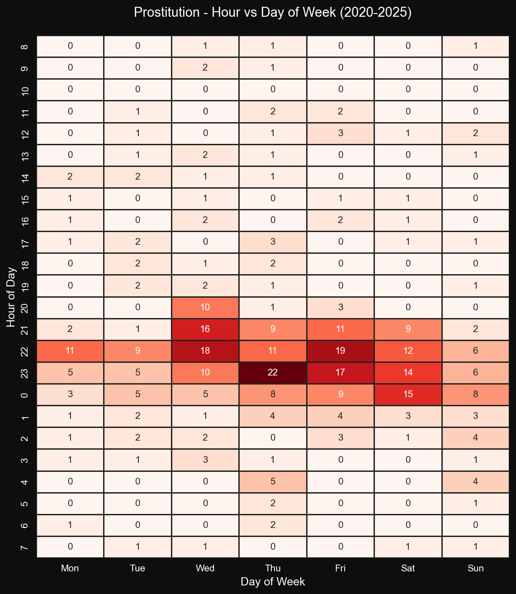

LOOKING FOR A LATE-NIGHT DEAL? TIMING MAKES ALL THE DIFFERENCE.
By tracking after-dark activity through crime data, we can pinpoint the hours and places where the streets are busiest and when prices are likely lower.
WHEN TO GO
A well done heatmap is the best way to find out.
Hours are starting from 8 AM to better center the peak activity. The cluster red zone reveal the clearest patterns at a glance.

A heatmap showing hourly prostitution incidents per day in the city of San Francisco for the years 2020-25. Public data from SF official sources. Mind that even if the count number of incidents are quite low, the same pattern is shown for other year ranges indicating the sample is representative.
The busiest hours are between 8 PM and midnight, with a clear peak at 11 PM.
This matches known global patterns for nightlife and prostitution activity
(see research).
Interestingly, midweek shows higher peaks than the weekend, which may reflect
changes in police patrols during weekends.
Busiest hours are 8-12 PM
WHERE TO GO
I know it's a HARD topic, but what about a less heated map?
Let's look into detailed geographic information to localize the best places to find a good time.
An overlay of the prostitution crimes's GPS location on the map of San Francisco for the years 2020-25. Each dot is a registered crime.